Um ecossistema multiplataforma e de código aberto para o ciclismo virtual
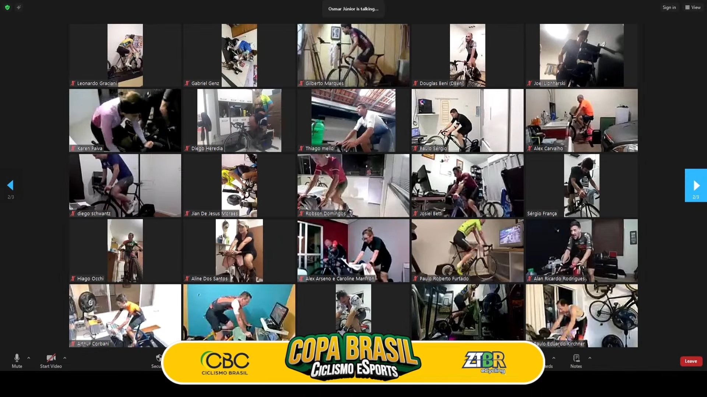
Quatro aplicativos, três exportações manuais e uma conta em cada um.
a cada troca de aplicativo, o dado se separa do percurso que o gerou
assinaturas em dólar ou euro: US$ 19,99/mês (Zwift), € 19,99/mês (Rouvy)
métricas como TSS e PMC sem fórmula ou parâmetro explícitos
| Plataforma | GPX do usuário | Controla o rolo | Análise do treino | Histórico local | Código aberto |
|---|---|---|---|---|---|
| Zwift | |||||
| Rouvy | |||||
| Biketerra | |||||
| TrainingPeaks Virtual | |||||
| GoldenCheetah | |||||
| Incyclist | |||||
| Argus Cyclist |
Contribuição: integração e transparência, não pioneirismo em cada função.
Ensaiar a subida de uma prova antes do dia.
Pedalar em Chamonix ou Tromsø sem sair de casa.
Carga de treino medida, com fórmula aberta.
Tudo no mesmo aplicativo: código aberto (GPLv3), dados no dispositivo; Strava e Intervals.icu são opcionais.
● As dependências apontam para dentro: o domínio só declara portas; banco e Bluetooth se encaixam nelas por fora.
O protocolo não comprova a origem dos dados: qualquer aparelho, ou um app que imite um sensor, pode enviar a potência que quiser. Esse risco de fraude é o tema do Argus Recon.
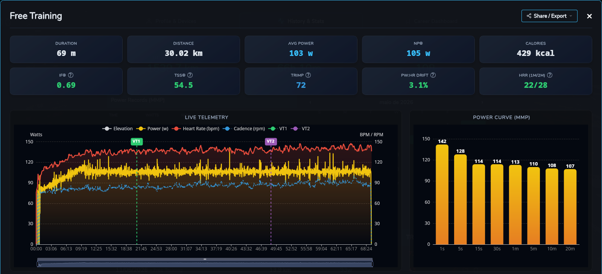
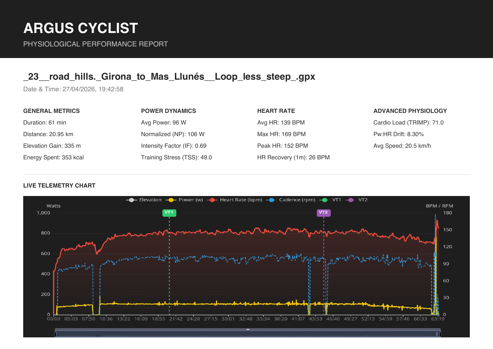
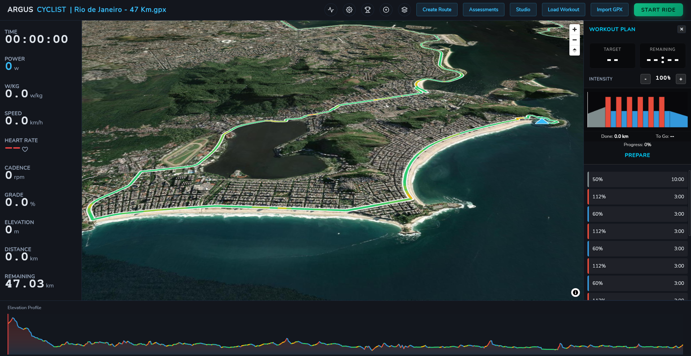
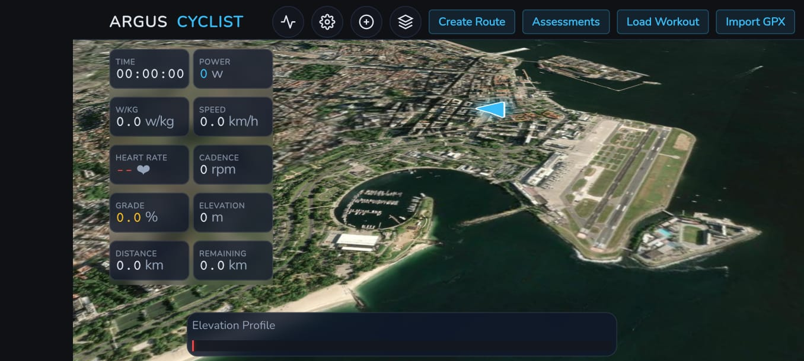
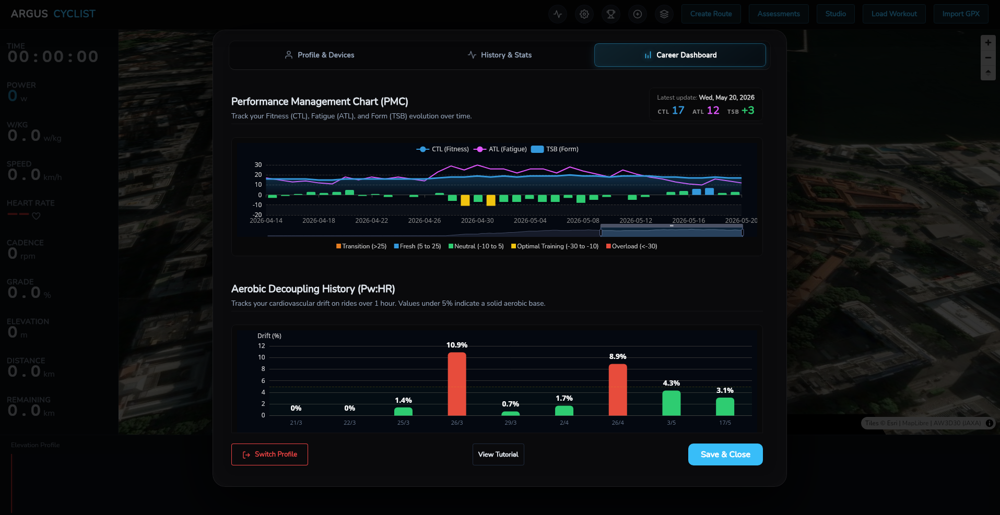
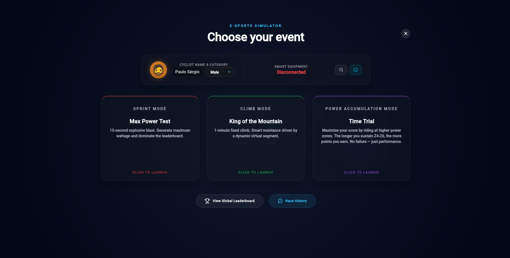
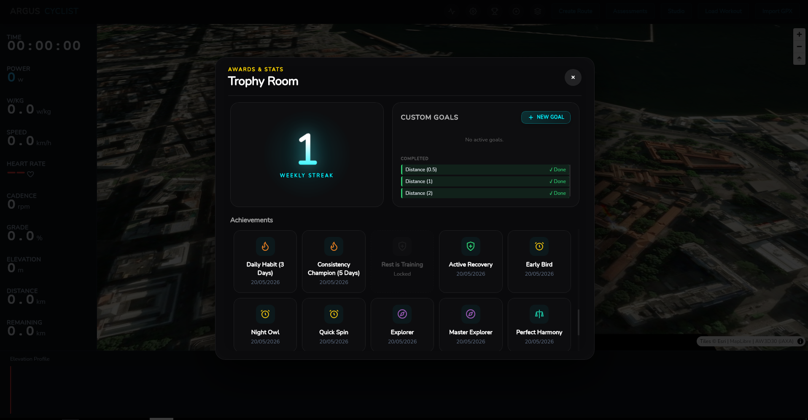
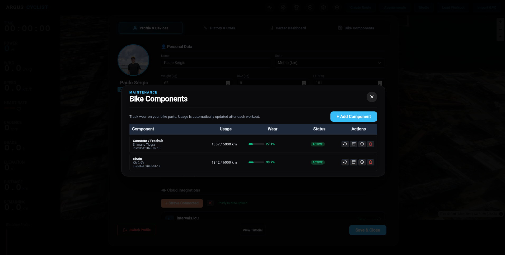
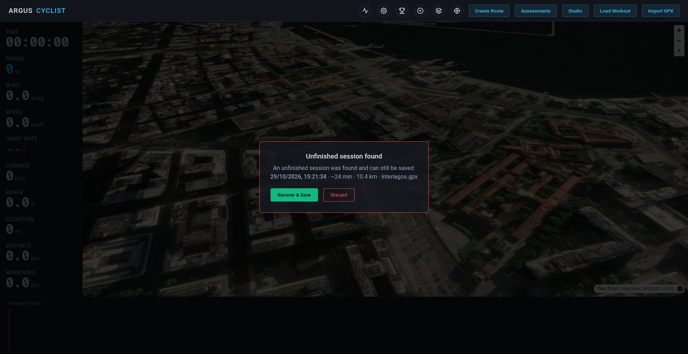
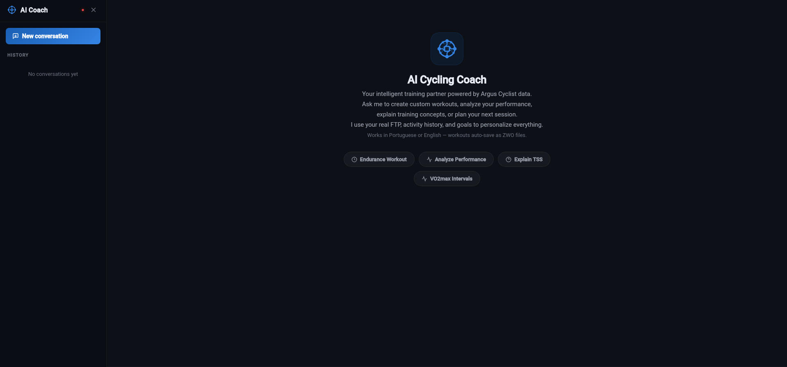
métricas, física, reamostragem, arquivo FIT, recuperação de sessão e ZWO
GPX → rolo → métricas → histórico, sem trocar de aplicativo
carga externa (NP, IF, TSS, PMC) e resposta cardíaca (TRIMP, HRR, Pw:FC), com fórmula aberta e 27 testes
114 sessões e 2.182 km de uso real no piloto
código aberto e registrado, com o processo documentado no Git
Mais que o código: mostrar o que um software esportivo mede, como mede e para que serve.
ANT+ ALLIANCE. ANT+ Fitness Equipment Control (FE-C) Device Profile. 2024.
BANISTER, E. W. Modeling elite athletic performance. In: MACDOUGALL, J. D. et al. (ed.). Physiological Testing of the High-Performance Athlete. Champaign: Human Kinetics, 1991. p. 403–424.
BLUETOOTH SIG. Bluetooth Core Specification, version 5.4. 2023.
BLUETOOTH SIG. Fitness Machine Service (FTMS) Specification v1.0. 2017.
COGGAN, A.; ALLEN, H. Training and Racing with a Power Meter. 2. ed. Boulder: VeloPress, 2010.
FREE SOFTWARE FOUNDATION. GNU General Public License, version 3. 2007. Disponível em: gnu.org/licenses/gpl-3.0.html.
GARMIN. FIT SDK (Flexible and Interoperable Data Transfer). 2024.
HEVNER, A. R. et al. Design science in information systems research. MIS Quarterly, v. 28, n. 1, p. 75–105, 2004.
INSTITUTO NACIONAL DA PROPRIEDADE INDUSTRIAL. Certificado de Registro de Programa de Computador: Argus Cyclist. Processo BR512026003786-7. 2026.
KLEPPMANN, M. et al. Local-first software: you own your data, in spite of the cloud. In: ONWARD! 2019. ACM, 2019. p. 154–178.
MARTIN, J. C. et al. Validation of a mathematical model for road cycling power. Journal of Applied Biomechanics, v. 14, n. 3, p. 276–291, 1998.
MARTIN, R. C. Clean Architecture: a craftsman’s guide to software structure and design. Boston: Prentice Hall, 2017.
PEFFERS, K. et al. A design science research methodology for information systems research. Journal of Management Information Systems, v. 24, n. 3, p. 45–77, 2007.
TOPOGRAFIX. GPX: the GPS Exchange Format v1.1. 2004.
UNION CYCLISTE INTERNATIONALE. UCI Cycling Esports World Championships. Disponível em: uci.org.
MEDEIROS, P. S. S. de. Argus Cyclist: ecossistema multiplataforma de código aberto para o ciclismo virtual. GitHub, 2026. Licença GPLv3. Disponível em: github.com/SoNdA11/argus-cyclist.
MEDEIROS, P. S. S. de. Argus Recon: análise de segurança do Bluetooth LE em dispositivos de ciclismo. GitHub, 2026. Disponível em: github.com/SoNdA11/argus-recon.
APACHE SOFTWARE FOUNDATION. Apache ECharts. Disponível em: echarts.apache.org.
BIKETERRA. Biketerra: ride virtually, anywhere. 2026. Disponível em: biketerra.com.
CAPACITOR. Capacitor: cross-platform native runtime for web apps. 2024. Disponível em: capacitorjs.com.
CAPACITOR COMMUNITY. Bluetooth Low Energy plugin for Capacitor. 2024. Disponível em: github.com/capacitor-community/bluetooth-le.
GOLDENCHEETAH. GoldenCheetah: performance software for cyclists. 2026. Disponível em: goldencheetah.org.
GORM. GORM: the ORM library for Golang. 2024. Disponível em: gorm.io.
HARUN, M. muktihari/fit: FIT library for Go. 2024. Disponível em: github.com/muktihari/fit.
INCYCLIST. Incyclist: free and open source indoor cycling app. 2026. Disponível em: incyclist.com.
INTERVALS.ICU. Intervals.icu: training diary and analytics. 2024. Disponível em: intervals.icu.
MAPLIBRE. MapLibre GL JS. 2024. Disponível em: maplibre.org.
OLLAMA. Ollama: local LLM inference. 2024. Disponível em: ollama.com.
ROUVY. Rouvy pricing plans. 2026. Disponível em: rouvy.com/pricing.
SIMPLE ICONS. Simple Icons (CC0). Disponível em: simpleicons.org.
SQLITE CONSORTIUM. SQLite. 2024. Disponível em: sqlite.org.
STRAVA. Strava Developers: API reference v3. 2025. Disponível em: developers.strava.com.
TINYGO. TinyGo Bluetooth. 2024. Disponível em: tinygo.org/x/bluetooth.
TRAININGPEAKS. TrainingPeaks Virtual. 2026. Disponível em: trainingpeaks.com/virtual.
WAILS. Wails: desktop applications using Go and web technologies. 2024. Disponível em: wails.io.
ZWIFT. Zwift membership and pricing. 2026. Disponível em: zwift.com/pricing.
Perguntas e sugestões são bem-vindas.